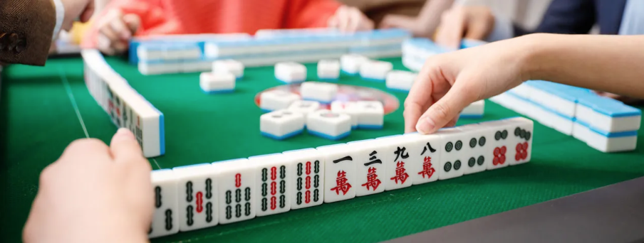
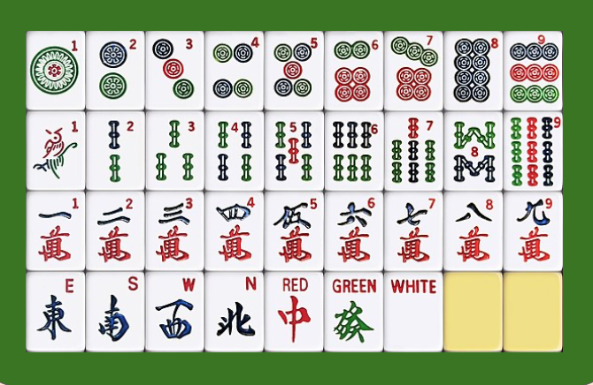
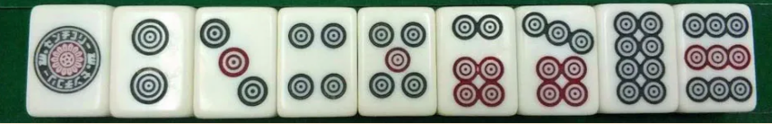
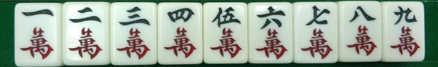
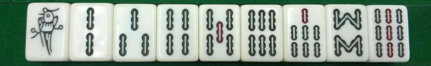
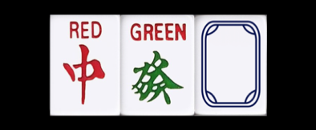
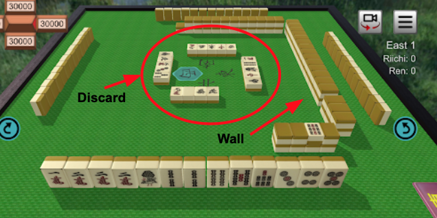
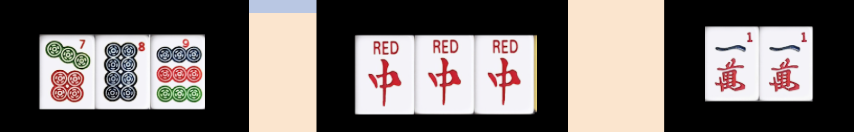
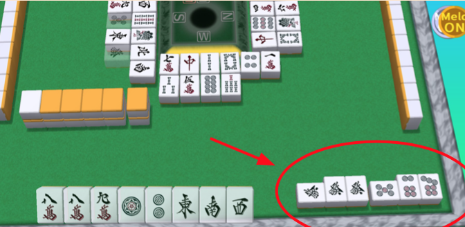

In this guide I will teach you how to play the game of Mahjong
I have split this guide into 3 sections. First is this intro, which will discuss how the game works and the rules simply. Then move onto the second and third sections will allow you to put this knowledge into practice, to actually play a game with friends and family
The game of mahjong uses tiles for playing and are used similarly to playing cards, as in there are numbered suits. There are 3 different suits that are numbered from 1 to 9 and 2 extra suits which we will explain shortly
There are 4 identical copies of each tile so there are 136 tiles in total
There is the circles suit numbered 1 to 9. And there are 4 copies of each number so Thats 36 circle tiles in total
There is the characters suit numbered 1 to 9. And there are 4 copies of each number so thats 36 character tiles in total
And the bamboo suit numbered 1 to 9. And there are 4 copies of each number so thats 36 bamboo tiles in total
That’s 108 total numbered suits
Now lets talk about the 2 extra suits, which are called honor tiles
First is the dragon suit which has 3 different dragons with 4 copies each, which is a total of 12 dragon tiles.
There is the red Dragon, Green Dragon and the White or square dragon
The second suit from the honor tiles is the winds, which are simply east, south, west and north, with 4 copies of each one which is a total of 16 wind tiles

That’s a total of 28 honor tiles plus the 108 numbered tiles which is a total of 136 tiles as mentioned before
It's important to note that the game originally comes with 144 tiles with another extra suit called the flower suits, however in most places the game is played without these flower tiles and only the tiles we already mentioned
click the logo above to have a look at a labelled picture of these tiles whenever you need a reminder throughout this guide
HOW TO PLAY
To play Mahjong you must set up some walls for each player to draw from when it’s their turn and each player must start with 13 tiles. You can learn how to set up this wall and other technical things for playing at the end of the guide in the setting up section.
To play, each player will draw a tile from the wall then discard one face up for everyone to see, going anti-clockwise
The aim of the game is to create combinations and the first to combine all of his tiles wins
However you must complete two conditions in order to win, the first is to have 4 combinations of 3 pieces each, and a pair (14 total pieces)
Combinations are of 2 types - three identical pieces also known as a triplet, or a sequence of 3 numbers like 3,4,5 and of course one pair of 2 identical tiles to win the game
The second condition is to complete a method of winning. Methods of winning are simply criterias for your combinations for example one method of winning is called a flush which requires all your combinations including the pair to be of the same suit. All methods of winning are listed in a table in the how to win section.
In the game of Mahjong there is a feature where you can steal pieces discarded by other players to complete your combinations
If stealing to complete a sequence this is called “Chi” and can only be stolen from the player before you
If stealing to complete a triplet this is called "Pon" and can be stolen anytime a piece is discarded then it becomes your turn
If stealing to complete 4 identical tiles, this is called "Kan" this can also be done anytime, and this “kan” combination will just count as a triplet, therefore you must draw an extra piece to balance out your pieces (in order to complete the first condition of winning - 4 combos of 3 and a pair)
If more than one person want to steal, there is an order of precedence, with “pon/kan” having presence over “chi”. And of course winning from a discarded tile takes the highest precedence
If you steal a piece, you must put this newly formed combination to your right side for all players to see, and now you hand is called an open hand (which comes with some disadvantages)
The disadvantage is that some methods of winning can only be done when your play is closed, however most winning methods can be done with both open and closed hands. However stealing a winning piece doesnt make your hand open
Each method of winning will give the player a certain number of 'han'.
These "Han" will be converted into points at the end and each player starts with 25,000 points. How to calculate these points will be covered in the calculating points section.
Now move onto the how to win section to learn some of the winning methods when creating your combinations.